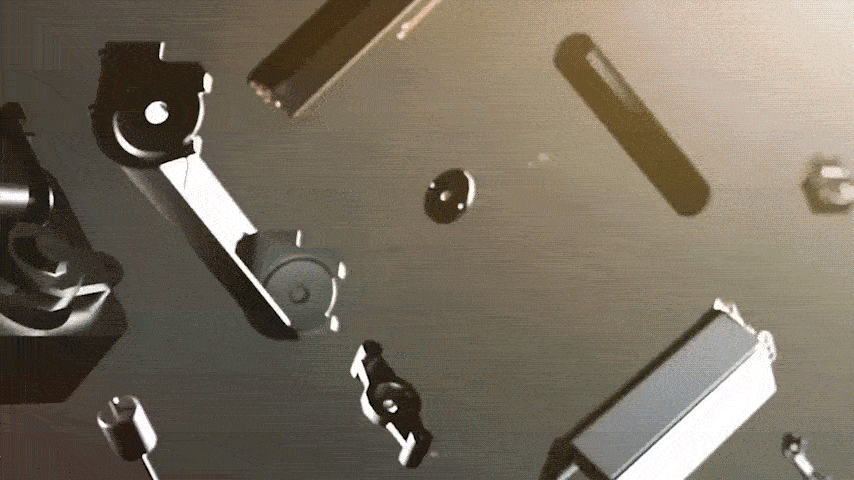

Publicidad
Olas de calor récord en 2026: este aire acondicionado de €137.99 diseñado por un ingeniero español deja en evidencia a los sistemas costosos
Dígale adiós a los aires acondicionados impagables y a los costosos técnicos. Este nuevo dispositivo de refrigeración no requiere instalación, enfría cualquier habitación en minutos y le protege de la trampa de las facturas de luz desorbitadas.
Los meteorólogos coinciden: las previsiones indican que el verano de 2026 batirá todos los récords anteriores. Sin embargo, para millones de personas en España, la inminente ola de calor representa un desafío mayúsculo.
Los precios de la electricidad ya están por las nubes y siguen subiendo sin tregua. Cualquiera que intente enfriar su hogar con una unidad de aire acondicionado convencional en este momento se enfrenta a un verdadero ahogo financiero.
El problema del aire acondicionado tradicional:
• Costes iniciales astronómicos: Los consumidores suelen tener que reservar varios miles de euros solo para la unidad.
• Instalación complicada: Semanas de espera para los técnicos, ruidos molestos y costosos agujeros en las paredes.
• La trampa energética diaria: El uso de una unidad estándar puede consumir fácilmente hasta 10 € de electricidad al día. Eso supone una carga adicional de hasta 300 € al mes, solo por un poco de alivio contra el calor.
En resumen: es un lujo que casi nadie puede permitirse —o quiere pagar— hoy en día.
El punto de inflexión: un experto de la industria rompe el silencio
Aquí es exactamente donde intervino un antiguo ingeniero. Pasó años trabajando en el departamento de I+D de uno de los mayores fabricantes de aire acondicionado del mundo, siendo testigo directo de cómo se encarece artificialmente la refrigeración del hogar para el consumidor final.
Su objetivo era tan claro como el agua: crear una solución asequible para todos. Un dispositivo que ofrezca temperaturas polares pero que no requiera ninguna instalación y consuma el mínimo de electricidad.
Tras una fase de desarrollo de tres años, finalmente lo ha logrado.
Estamos hablando del Coolizi Coolzy.

La historia detrás de la innovación
El cerebro detrás del Coolizi Coolzy es el ingeniero madrileño Lucas V. Cuando la empresa de ingeniería de su padre estaba al borde de la quiebra, Lucas dejó su empleo corporativo para ayudar. En pleno proceso de desarrollo, su padre falleció inesperadamente. Lucas decidió seguir adelante solo y lo logró: salvó el negocio familiar y los 13 puestos de trabajo locales en la ciudad.
Hoy en día, el Coolizi Coolzy está batiendo récords de ventas. A pesar de la enorme demanda, Lucas se niega a recurrir a la producción en masa de bajo costo:
"Varias multinacionales quisieron comprar la patente del Coolizi Coolzy por varios millones de euros para trasladar la producción al extranjero. Me negué. Fabricamos estrictamente bajo los altos estándares de calidad de mi padre. Prefiero tardar un poco más en los envíos ahora mismo que vender un producto inferior".
Un vistazo al funcionamiento interno del Coolizi Coolzy muestra exactamente por qué este invento está revolucionando por completo el mercado.

El secreto del frío ártico: ¿Qué hace que el Coolizi Coolzy sea tan único?
Los sistemas de aire acondicionado convencionales dependen de compresores pesados y ruidosos, además de refrigerantes químicos. Consumen cantidades masivas de energía para bajar la temperatura por fuerza bruta. Lucas V. ha dado un giro total a este concepto anticuado.
El Coolizi Coolzy utiliza un principio avanzado de tecnología de absorción térmica. Este dispositivo compacto aspira el aire caliente y húmedo del interior y lo pasa a través de una cámara de enfriamiento sellada internamente. Un filtro especial de nano-panal extrae la energía térmica del aire a nivel molecular, convirtiéndola instantáneamente en un flujo de aire frío, agradablemente seco y cristalino.
El resultado es una tecnología limpia que no tiene rival en el mercado español por tres razones principales:
• Menor consumo de energía: Mientras que una unidad de aire acondicionado clásica consume hasta 2.000 vatios de la red, el Coolizi Coolzy solo necesita 45 vatios. ¡Eso es menos que una bombilla tradicional! Mantenerte fresco solo te costará unos pocos céntimos al día.
• Sin complicaciones de instalación (sin tubo de escape): Los aires acondicionados portátiles convencionales necesitan un tubo grueso para expulsar el aire caliente por la ventana, lo que curiosamente deja entrar de nuevo el calor. Como el Coolizi Coolzy gestiona la energía térmica internamente, funciona sin ningún tipo de tubo. Solo tienes que enchufarlo, encenderlo y disfrutar. Puedes moverlo de una habitación a otra con total libertad.
• Ambiente perfectamente equilibrado: El aire acondicionado tradicional reseca el aire por completo, provocando a menudo resfriados, dolor de garganta o irritación en los ojos. La tecnología del Coolizi Coolzy filtra las partículas de polvo simultáneamente, ofreciendo un flujo de aire natural y revitalizante que cuida al máximo tu sistema respiratorio.

Lo que dicen nuestros clientes sobre el Coolizi Coolzy:
⭐⭐⭐⭐⭐ "Al principio no estaba seguro de si un dispositivo tan compacto y sin tubo de escape podría con el calor de mi buhardilla. Pero el Coolizi Coolzy me ha sorprendido totalmente. En apenas 15 minutos, mi cuarto pasó de unos sofocantes 28 grados a unos agradables 19 grados. Se nota la calidad premium al instante; no tiene nada que ver con imitaciones baratas. ¡Vale cada euro!" – Lucas K. de Madrid
⭐⭐⭐⭐⭐ "El verano pasado no podía ni dormir por el calor. Un aire acondicionado fijo no era viable por el gasto de luz y el coste del técnico para la instalación. Ahora usamos el Coolizi Coolzy en el dormitorio casi todas las noches. Es supersilencioso, refresca muchísimo y consume poquísimo. Casi ni noto la diferencia en la factura eléctrica. Por fin descanso del tirón." – Lucía T. de Barcelona
⭐⭐⭐⭐⭐ "El aire acondicionado convencional siempre me resecaba la garganta y me irritaba los ojos casi al instante. Con el Coolizi Coolzy la sensación es totalmente distinta: el aire se siente como una brisa marina fresca y natural. Como es tan ligero, lo tengo en mi despacho durante el día y me lo llevo al dormitorio por la noche. Es enchufar y listo. Esto es lo que yo llamo ingeniería española brillante." – Lucas M. de Madrid
⭐⭐⭐⭐⭐ "Buscaba una solución sencilla para mi segunda residencia. No quería técnicos haciendo agujeros en las paredes. El Coolizi Coolzy llegó de inmediato, tiene un diseño muy elegante y funcionó a la perfección desde el primer momento. Saber que además estoy apoyando a una empresa familiar local y fomentando el empleo nacional hizo que la decisión fuera aún más fácil. ¡Un imprescindible para el verano!" – Carlos B. de Barcelona

Preguntas Frecuentes
• ¿El Coolizi Coolzy requiere una instalación complicada? No, en absoluto. No hace falta contratar a ningún profesional, ni usar herramientas, ni perforar las paredes. Simplemente coloque el dispositivo donde prefiera, conéctelo a una toma de corriente estándar y enciéndalo.
• ¿Tengo que estar rellenándolo con agua constantemente? No, el depósito integrado es sumamente eficiente. Un solo llenado es suficiente para que el Coolizi Coolzy funcione de forma continua hasta 8-10 horas; ideal para disfrutar de una noche completa de descanso reparador.
• ¿Es el dispositivo demasiado ruidoso para un dormitorio? No. A diferencia de los ruidosos aires acondicionados con compresor, el Coolizi Coolzy ha sido diseñado específicamente para un funcionamiento ultrasilencioso. No le molestará ni para ver la televisión ni para dormir.
• ¿Qué área puede enfriar la unidad de forma eficaz? Puede cubrir fácilmente de 80 a 120 metros cuadrados. Solo tiene que dejar las puertas interiores abiertas para que el aire fresco circule de forma óptima y climatice eficazmente toda su casa o piso.

¿Dónde puedo comprar el Coolizi Coolzy?
Para garantizar que todo el mundo pueda permitirse el Coolizi Coolzy, solo está disponible directamente en la tienda online oficial. Lucas prescinde intencionadamente de intermediarios y grandes corporaciones, que de otro modo elevarían el precio a varios miles de euros.
Garantía de devolución del 100% del dinero (sin preguntas)
Dado que el Coolizi Coolzy fue el último gran proyecto personal en el que Lucas trabajó con su difunto padre, su objetivo no es obtener beneficios masivos. Solo quiere que cada cliente esté satisfecho y poder seguir pagando a su dedicado equipo de trabajadores.
Es por eso que su política es sencilla: si no estás absolutamente encantado, te devolvemos tu dinero, sin condiciones ni rodeos, y sin preguntas. Prueba el Coolizi Coolzy durante 1 o 2 meses, y si no estás completamente satisfecho, ¡recibirás un reembolso del 100%! No corres absolutamente ningún riesgo.
¡No te dejes engañar por imitaciones baratas de baja calidad! - Si quieres tener la seguridad de estar comprando el producto original, sigue estos pasos:
Nota: ¡La oferta flash del 50% de descuento ya está activa!
Consulta el siguiente enlace para ver si la promoción sigue vigente y asegura tu unidad antes de que el lote actual se agote por completo:
👉 [HAZ CLIC AQUÍ: Visita el sitio oficial del fabricante con un 50% de descuento]
⭐⭐⭐⭐⭐ Manuel L. de Madrid: "¡Enfría todo nuestro piso de 93 m²! Al principio dudaba de lo que prometían sobre el área de cobertura, pero realmente funciona. Simplemente dejamos las puertas interiores abiertas y el aire fresco se reparte por toda la casa. El calor sofocante ha desaparecido por completo".
⭐⭐⭐⭐⭐ Elena R. de Barcelona: "¡Por fin he dejado de temer a la factura de la luz! Lo tenemos encendido sin parar en los días calurosos. La app de mi contador inteligente apenas muestra picos de consumo. Cuando pienso en mi vecino pagando €10 al día por usar su sistema antiguo, sé que tomé la mejor decisión".
⭐⭐⭐⭐⭐ Miguel W. de Madrid: "Sacar de la caja, encender y listo: aire helado. Sin tubos de escape, sin taladros y sin líos con técnicos. Esto es exactamente lo que buscaba para mi piso de alquiler. Solo hay que colocarlo, enchufarlo y disfrutar al instante. Un invento brillante".
⭐⭐⭐⭐⭐ Elena S. de Sevilla: "Volvemos a dormir como bebés. Esas noches calurosas de verano solían ser un auténtico horror para nosotros. El Coolizi Coolzy es silencioso y deja el dormitorio maravillosamente fresco. Que venga el verano de 2026, estamos totalmente preparados".
⭐⭐⭐⭐⭐ David H. de Zaragoza: "Gran calidad y un proyecto hecho con mucha pasión. Se nota al instante que cuenta con el respaldo de ingeniería española de calidad, no es plástico barato de importación. Es un negocio local increíble al que me encantó apoyar con esta compra".
⭐⭐⭐⭐⭐ Lucas M. de Valencia: "¡Me he ahorrado miles de euros! Un instalador quería cobrarme casi €3.000 por poner un sistema de aire centralizado. El Coolizi Coolzy enfría mis habitaciones igual de bien, cuesta una fracción del precio y apenas consume electricidad."
⭐⭐⭐⭐⭐ Sara B. de Barcelona: "Se acabaron los ojos secos y los resfriados de verano. El aire acondicionado convencional siempre me provoca dolor de garganta y sequedad al instante. El aire del Coolizi Coolzy es increíblemente agradable, fresco y natural. Perfecto para alérgicos y personas sensibles."
✅ Sin necesidad de instalación
✅ Enfría apartamentos completos
✅ Ingeniería española